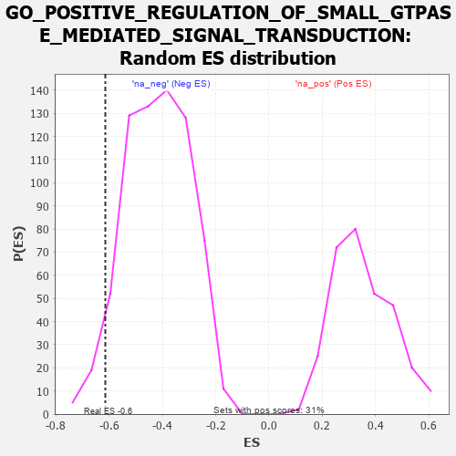

| | | Dataset | 7d |
| Phenotype | NoPhenotypeAvailable |
| Upregulated in class | na_neg |
| GeneSet | GO_POSITIVE_REGULATION_OF_SMALL_GTPASE_MEDIATED_SIGNAL_TRANSDUCTION |
| Enrichment Score (ES) | -0.6148542 |
| Normalized Enrichment Score (NES) | -1.470456 |
| Nominal p-value | 0.050578035 |
| FDR q-value | 0.21787684 |
| FWER p-Value | 1.0 |
Table: GSEA Results Summary
 Fig 1: Enrichment plot: GO_POSITIVE_REGULATION_OF_SMALL_GTPASE_MEDIATED_SIGNAL_TRANSDUCTION
Fig 1: Enrichment plot: GO_POSITIVE_REGULATION_OF_SMALL_GTPASE_MEDIATED_SIGNAL_TRANSDUCTION
Profile of the Running ES Score & Positions of GeneSet Members on the Rank Ordered List
| PROBE | GENE SYMBOL | GENE_TITLE | RANK IN GENE LIST | RANK METRIC SCORE | RUNNING ES | CORE ENRICHMENT | | 1 | SRC | | | 1128 | 0.459 | -0.1050 | No |
| 2 | SOS1 | | | 1547 | 0.384 | -0.1267 | No |
| 3 | GPR18 | | | 3578 | 0.063 | -0.3768 | No |
| 4 | SOS2 | | | 3963 | 0.000 | -0.4251 | No |
| 5 | CSF1 | | | 4074 | -0.019 | -0.4373 | No |
| 6 | GPR4 | | | 5219 | -0.250 | -0.5611 | No |
| 7 | STK19 | | | 5297 | -0.270 | -0.5491 | No |
| 8 | DGKI | | | 5725 | -0.384 | -0.5719 | No |
| 9 | RAC1 | | | 6036 | -0.484 | -0.5720 | Yes |
| 10 | CDON | | | 6378 | -0.607 | -0.5662 | Yes |
| 11 | ROBO1 | | | 6577 | -0.699 | -0.5350 | Yes |
| 12 | NET1 | | | 6803 | -0.816 | -0.4977 | Yes |
| 13 | LRRD1 | | | 7406 | -1.273 | -0.4713 | Yes |
| 14 | SHOC2 | | | 7546 | -1.463 | -0.3713 | Yes |
| 15 | P2RY8 | | | 7750 | -1.912 | -0.2434 | Yes |
| 16 | ARRB1 | | | 7935 | -3.377 | 0.0045 | Yes |
Table: GSEA details [plain text format]

Fig 2: GO_POSITIVE_REGULATION_OF_SMALL_GTPASE_MEDIATED_SIGNAL_TRANSDUCTION: Random ES distribution
Gene set null distribution of ES for GO_POSITIVE_REGULATION_OF_SMALL_GTPASE_MEDIATED_SIGNAL_TRANSDUCTION